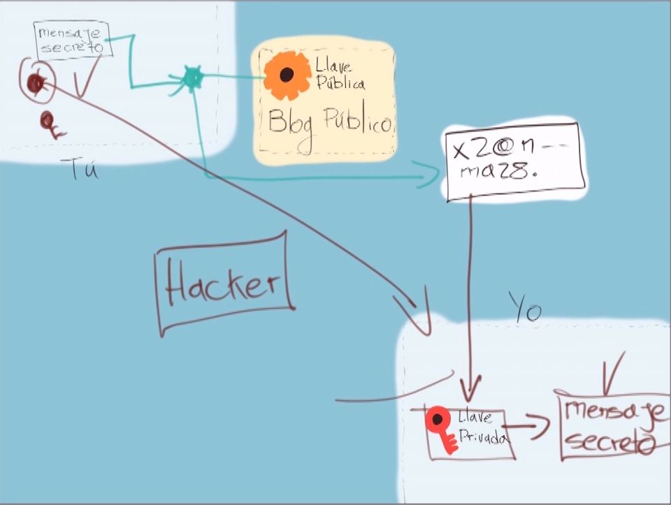

Llave privada puede abrir llave publica
Llave pública encripta mediante un algoritmo el mensaje a enviar el cual solo puede ser
invertido mediante la llave privada
Se guarda una llave privada en nuestra computadora mientras a github le enviamos una llave publica para poder realizar la conexion
Generar par de llave publica privada rsa. Comando:
ssh-keygen -t rsa -b 4096 -C "ricardoqb95@gmail.com"
-t rsa tipo de algoritmo
-b 4096 tamaño de encriptacion
Se recomienda dejar el archivo en la ruta del usuario .ssh/
eval $(ssh-agent -s) verificar que este corriendo el servicio de ssh
Agregar la llave privada al ssh
ssh-add id_rsa
Agregar la llave a github
